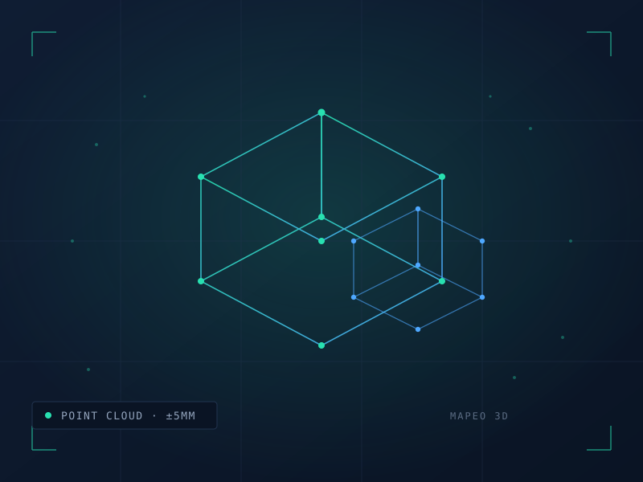

Digitalizamos espacios físicos con alta precisión, incluso en zonas sin GPS. Ideal para obra civil, minería, túneles y estructuras complejas.

Realizamos escaneos tridimensionales en exteriores e interiores que generan modelos digitales fieles a la realidad. La tecnología LiDAR mide millones de puntos por segundo y reconstruye geometrías completas sin contacto físico con la estructura.
Como distribuidores de Emesent en México, integramos escaneo móvil SLAM con la plataforma Hovermap: captura en movimiento, sin necesidad de señal satelital, en los entornos donde otras tecnologías fallan.
El resultado es una base confiable para detectar errores, optimizar diseños y tomar decisiones con datos reales en lugar de aproximaciones.
Definimos alcance, densidad de puntos requerida y condiciones del sitio.
Escaneo LiDAR móvil o estático según el entorno, con control de calidad en sitio.
Registro, limpieza y georreferenciación de la nube de puntos.
Modelos 3D, planos y reportes en los formatos que tu equipo utiliza.
| Precisión típica | ±5 mm según condiciones de sitio |
| Entornos | Exterior, interior, subterráneo y sin GPS |
| Formatos de entrega | LAS / LAZ, E57, OBJ, planos CAD, modelos BIM |
| Tecnología | LiDAR SLAM · Emesent Hovermap |
| Cobertura | Nacional, desde la Ciudad de México |
Cuéntanos el tipo de sitio y el nivel de detalle que requieres. Preparamos una propuesta de levantamiento a tu medida.